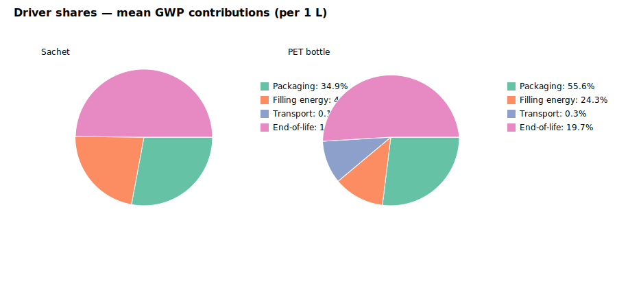
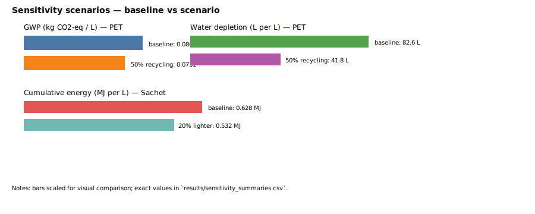

Policy Brief — Environmental Comparison: Sachet Water vs PET Bottled Water (Lagos)
Prepared from the project: Full documentation
Executive summary
Per 1 L consumed (baseline assumptions):
- Sachet: GWP ≈ 0.0425 kg CO2-eq, water depletion ≈ 12.4 L, energy ≈ 0.592 MJ.
- PET bottle: GWP ≈ 0.0897 kg CO2-eq, water depletion ≈ 82.6 L, energy ≈ 1.912 MJ.
Key hotspots
Packaging production dominates both water depletion and cumulative energy (≈ 80–95% of water footprint; ~35–55% of GWP depending on product). Filling energy and end-of-life are secondary but important for sachets due to high mismanagement rates.
Driver shares
See driver chart below (packaging / filling energy / transport / end-of-life):

Policy-relevant sensitivities
- Increase PET recycling to 50%: PET water depletion falls ~50% and GWP falls materially (~38% reduction in baseline scenario).
- Reduce sachet packaging mass by 20%: significant reductions in water and energy for sachets (≈20% reduction of those packaging-driven impacts).
- Improve waste collection to avoid open burning: reduces GWP from EoL and lowers pollution/health risks.
Sensitivity visuals

Recommendations
- Prioritise interventions that reduce packaging mass and increase recycled content for both sachets and PET.
- Invest in collection and recycling infrastructure to capture post-consumer packaging and reduce open burning; targeted pilot in Lagos can shift large fractions of mismanaged plastic to recycling streams.
- Encourage design changes and extended producer responsibility for sachet-producing firms; small reductions in sachet mass compound to large regional benefits.
- Support local data collection (plant energy, real-world packaging mass, and waste fate) to refine LCA and target policies efficiently.
How to use this memo
Open this HTML file in a browser and save as Word (File → Save As → Webpage) or open in Word and save as .docx to produce an editable Word brief for stakeholders.
Generated from the project repository — see full documentation for detailed methods, data, and assumptions.